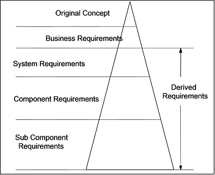

General Approach to Requirements Development
The following diagram provides a graphical depiction of the requirements creation process. Requirements are
created in the order depicted, from top to bottom. As you move into lower levels of requirements, specificity increases
as depicted by the widening triangle bases. The bullets that follow the graphic provide additional insights.

-
Decide on and agree what levels of requirements are appropriate for your situation - for simple projects you may be
able to get by with just System Requirements - for large complex projects you are likely to need all levels
-
Start with the highest level
-
Progress over time to the lowest level
-
One level at a time
-
Review frequently (informal and formal)
-
Consider all disciplines at each level
-
Hardware, software, maintenance, etc.
-
Define and document external interfaces at each level
-
Document rationale for decisions made at each level
-
Document trade studies executed at each level
-
Document results of each review and actions taken
General rules for writing requirements
Requirements should make good use of the language: Use complete sentences, including both a subject and a verb. The
subject is an actor, a stakeholder, the system under development, or a design entity that is related to the
requirement. The verb specifies a condition, action, or intended result that is done for, by, with, or to the
subject. Consistent use of the phase shall be solidifies the link between the subject and the requirement,
condition, or state required. Additional general rules include:
-
Define one requirement at a time.
-
Avoid conjunctions (and, or) that make multiple requirements.
-
Avoid let-out clauses or words that imply options or exceptions (unless, except, if necessary, but).
-
Use simple, direct sentences.
-
Use a limited vocabulary, especially if your audience is international.
-
Define verifiable criteria (e.g., "...within three hour of the event")
Quality attributes of well written requirements
Individual requirements should exhibit the follow attributes that define well written requirements:
-
Achievable - the requirement reflects a need that is within the realm of the possible and
realistically within the time, cost, and technical constraints that the end client has laid upon the program.
-
Unambiguous - every requirement has only one interpretation
-
Understandable - the interpretation of each requirement is clear
-
Correct - a requirement the system is in fact required to do
-
Complete - all information necessary to define the requirement is included in the requirement.
-
Concise - no unnecessary information is included in the requirement
-
Current - the requirement reflects current needs rather than recalling a need or desire that
expired months or years prior to the current effort.
-
Singular - Each requirement specifies a single thought, not a collection of thoughts or
conditions.
-
Traced - each requirement is traced to some stakeholder document or statement
-
Traceable - each derived requirement must be traceable to an originating requirement via some
unique name or number
-
Design independent - each requirement specifies an end result, behavior, or other system
characteristic, and not a particular solution or a portion of a particular solution
-
Verifiable - a finite, cost-effective process can be defined to check that the requirement has
been achieved
-
Unbiased - not biased by any particular implementation
Quality attributes of a well written set of requirements
Just as individual requirements have quality attributes, so too does a set of requirements. A set of requirements,
representing a business initiative, system, or subsystem grouping, should exhibit the follow attributes that define a
well written set of requirements:
-
Unique - requirement(s) is (are) not overlapping or redundant with other requirements
-
Complete - (a) everything the system is required to do throughout the system's life cycle is
included; (b) responses to all possible (realizable) inputs throughout the system's life cycle are defined; (c) the
document is defined clearly and self-contained; and (d) there are no to be defined (TBD) or to be reviewed (TBR)
statements. Completeness is a desired property but cannot be proven at the time of requirements development, or
perhaps ever
-
Consistent - (a) internally, no two subsets of requirements conflict; and (b) externally, no
subset of requirements conflicts with external documents from which the requirements are traced
-
Comparable - the relative priority of the requirements is included
-
Modifiable - changes to the requirements can be made easily, consistently (free of redundancy),
and completely
-
Attainable - solutions exist within performance, cost and schedule constraints
Additional tips for writing good requirements
There are several additional steps that can be taken when developing requirements that will help ensure the writing
properly captures the attributes listed above. These additional steps include developing acceptance criteria for each
requirement as it is written. This helps with both clarity and understanding when review the requirements with
stakeholders. Additionally, developing a traceability matrix during the process helps ensure design consistency and
completeness while reducing the possibility of overlapping requirements.
There are also several words or phrases that should be avoided in requirements development due to their ability to
obscure the precise meaning of, the intended applicability of, and/or the correct scope of the requirement. While these
words or phrases change with time, the Risk Management organization keeps an updated set that can be provided. A
current list of words or phrases to avoid at the time of this writing includes the following:
-
Acceptable, adequate
-
As much as practical
-
At least, at a minimum, not more than, not to exceed
-
Between
-
Depends on
-
Efficient
-
Fast, rapid
-
Flexible
-
Improved, better, faster, superior
-
Including, including but not limited to, and so on, etc., such as
-
Maximize, minimize, optimize
-
Normally, ideally
-
Optionally
-
Reasonable, when necessary, where appropriate
-
State-of-the-art
-
Sufficient
-
Support, enable
-
User-friendly, simple, easy
|